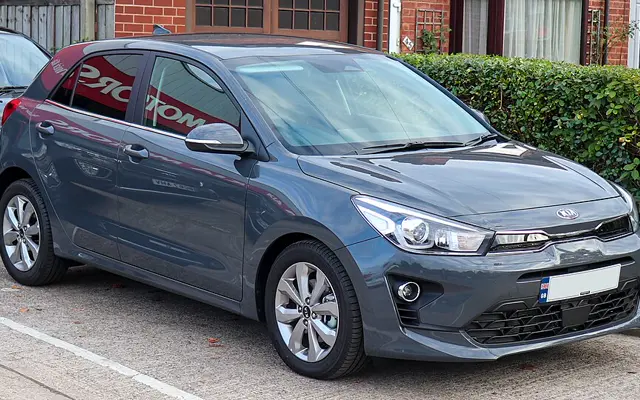

Par Motor › Precios por modelo › Kia Rio
Precio de segunda mano · noviembre de 2026¿Cuánto vale un Kia Rio de segunda mano?

Precio justo estimado de un Kia Rio usado en España, año por año, con los kilómetros normales para su edad y en buen estado: de 4.800 € a 12.300 €. Para tasar el tuyo con sus kilómetros reales y su estado, usa el tasador gratis.
Precios del Kia Rio por año
Rio III (2011–2017)
Precio de nuevo: 1.2 85 CV, 12.500 € · 1.4 CRDi 90 CV, 14.500 € · 1.4 109 CV, 14.000 €
| Año | Km normales | 1.2 85 CV · Gasolina | 1.4 CRDi 90 CV · Diésel | 1.4 109 CV · Gasolina |
|---|---|---|---|---|
| 2017 | 100.000 km | 6.300 € | 8.100 € | 7.100 € |
| 2016 | 100.000 km | 6.200 € | 7.600 € | 6.900 € |
| 2015 | 100.000 km | 6.000 € | 7.100 € | 6.700 € |
| 2014 | 100.000 km | 5.800 € | 6.600 € | 6.500 € |
| 2013 | 100.000 km | 5.500 € | 6.200 € | 6.200 € |
| 2012 | 100.000 km | 5.100 € | 5.800 € | 5.700 € |
| 2011 | 100.000 km | 4.800 € | 5.400 € | 5.400 € |
Rio IV (2017–2023)
Precio de nuevo: 1.2 84 CV, 15.000 € · 1.4 CRDi 90 CV, 16.500 € · 1.0 T-GDi 100 CV, 16.000 €
| Año | Km normales | 1.2 84 CV · Gasolina | 1.4 CRDi 90 CV · Diésel | 1.0 T-GDi 100 CV · Gasolina |
|---|---|---|---|---|
| 2023 | 50.000 km | 11.500 € | 12.200 € | 12.300 € |
| 2022 | 65.000 km | 10.800 € | 10.400 € | 11.500 € |
| 2021 | 80.000 km | 9.600 € | 9.600 € | 10.300 € |
| 2020 | 95.000 km | 8.400 € | 9.600 € | 9.000 € |
| 2019 | 100.000 km | 7.900 € | 9.500 € | 8.500 € |
| 2018 | 100.000 km | 7.800 € | 9.400 € | 8.300 € |
| 2017 | 100.000 km | 7.600 € | 9.200 € | 8.100 € |
Kilómetros normales: 15.000 al año en gasolina, híbridos y eléctricos, y 20.000 en diésel, con un máximo de 100.000 km (por encima no tasamos: el precio depende demasiado del historial de cada coche). Cifras redondeadas a 100 €.
Preguntas frecuentes
¿Cuánto vale un Kia Rio de segunda mano?
Según el año, la versión y los kilómetros, un Kia Rio usado vale hoy de 4.800 € a 12.300 € en España. El más barato de nuestra tabla es un 1.2 de 2011 (4.800 €) y el más caro un 1.0 T-GDi de 2023 (12.300 €). Son precios justos estimados entre particulares y profesionales, con los kilómetros normales para su edad y en buen estado.
¿Cuánto valor pierde un Kia Rio al año?
Con unos años encima, un Kia Rio pierde alrededor de un 10 % de su valor cada año (calculado sobre el 1.2 de la generación Rio IV). Los primeros años la caída es mayor y a partir de los 70.000 km se acelera.
¿Qué motorizaciones tiene el Kia Rio?
En nuestra base de datos hay versiones gasolina y diésel, en 2 generaciones: Rio III y Rio IV.
¿Cómo sé si me piden demasiado por un Kia Rio?
Abre el tasador de Par Motor, elige el Kia Rio, el año y los kilómetros reales, y escribe lo que te piden. Te diremos si está por debajo del precio justo (chollo) o por encima (caro). Es gratis y no pide registro ni matrícula.
Otros Kia
Compara su coste real
El precio de compra es solo una parte. Mira cuánto te costaría al mes con combustible, seguro, neumáticos, mantenimiento y lo que pierde de valor.
Abrir el comparador →